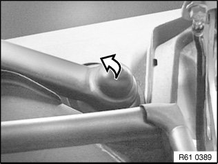
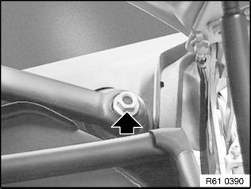
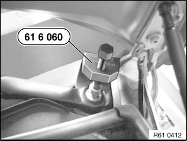
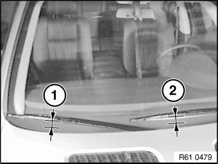
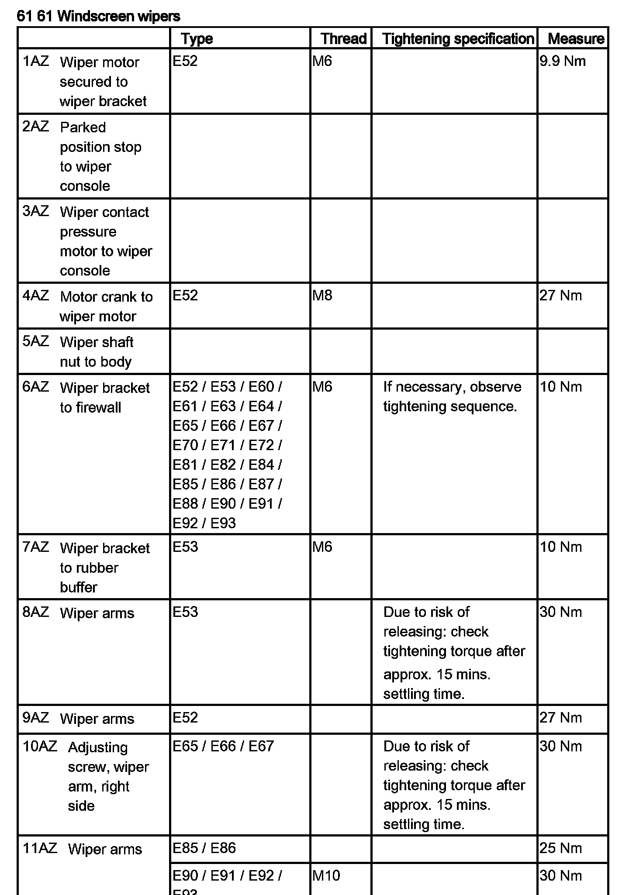

Wiper Arm: Service and Repair
61 61 100 Removing And Installing/Replacing Both Windscreen Wiper Arms
Special tools required:

Take off cap.

Unfasten nut. Tightening
torque 61 61 11AZ.

IMPORTANT: Do not bend windscreen wiper arm during removal (risk of breakage).
Detach windshield wiper arm with special tool 61 6 060.

Installation:
Adjust position of wiper arm in question in rest position (measured between wiper lip and top edge of cowl panel cover).
Then tighten down wiper arm and check position of relevant wiper arm again.
1. 47 ± 3 mm
2. 54 ± 3 mm
��;&:
